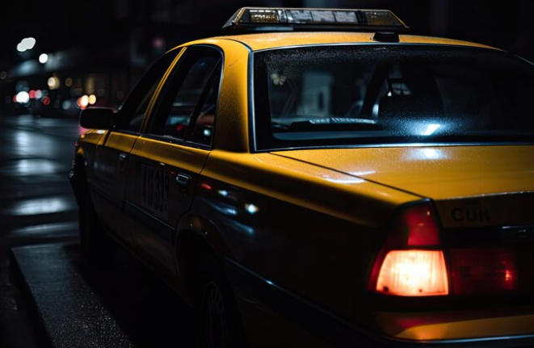

Svolta nelle indagini
Una dichiarazione chiave
La ragazza trovata in stato di shock, vicina di casa di Emil Novak, vittmia dell'omicidio consumato nella città
vecchia solo due giorni fa, grazie al supporto psicologico messo a disposizione del comando di polizia che si
sta occupando delle indagini, sembra essere stata in grado di fornire un identikit piuttosto preciso dell'assassino
che ha permesso agli investigatori di diramare un comunicato ufficiale in cui si invita la popolazione di Praga
a fornire tutti i dettagli di possibili avvistamenti; il sospetto ha tra i 20 e i 30 anni e ha un forte accento
inglese. I cittadini sono invitati a mantenere la più totale cautela, non avvicinandosi per alcun motivo, e di
contattare immediatamente le forze dell'ordine.
trovato un taxi abbandonato con il bagagliaio sporco di sangue
Nelle ultime ore del primo gennaio è stato segnalato un veicolo con sospette tracce ematiche sull'esterno
del portellone del bagagliaio, nella periferia sud della città. All'arrivo della polizia è stato riscontrato che
l'interno del vano bagagli era completamente imbrattato di sangue e non sembra esserci traccia del proprietario,
tale Adam Novotný, detentore di regolare licenza di trasporto e assicurazione. La scientifica sta esaminando le
tracce rinvenute nel veicolo mentre la polizia ha già iniziato le indagini per ritrovare il proprietario del
taxi che sembra essere scomparso dalla circolazione.
Alcune indiscrezioni rilasciate spontaneamente dagli inquirenti evidenziano che all'interno del veicolo sono
state ritrovate alcune piume di un volatile non ben definito che potrebbe indicare che l'auto sia stata
utilizzata per contrabbandare delle specie animali non permesse dall'ordinamento giuridico di Praga.
Alcune segnalazioni
pervenute in redazione lasciano pensare che si possa trattare dello stesso taxi avvistato lo stesso giorno
a qualche chilometro di distanza, in una zona residenziale, dove un gruppo di persone non identificate
sembra aver avuto un acceso diverbio in strada con urla e colpi di arma da fuoco.

una città blindata dalle esercitazioni militari
Dall'inizio del 2 gennaio sono partite alcune esercitazioni militari non preannunciate che hanno visto le maggiori
vie principali da e per Praga controllate da un presidio permanente di polizia. Già nelle prime ore alcuni cittadini
hanno inviato delle segnalazioni in redazione raccontando di frequenti posti di blocco e perquisizioni veicolari.
Tutto questo nel mentre che un convoglio, partito dalla stazione di polizia centrale di Praga, è stato visto dirigersi
verso l'autostrada fornito di una scorta sensazionale composta da diverse unità di polizia ed alcune camionette
delle forze armate della città.
Si presuppone che la destinazione, dato l'ingente dispiegamento di forze, sia la base militare di Hradiste a circa cento
chilometri a ovest della capitale. Operazioni del genere non venivano organizzate da diversi anni e la mobilitazione
dei militari in città riporta alla memoria dei momenti del passato che la maggior pate dei praghesi vorrebbe dimenticare,
soprattutto dopo essersi finalmente resi indipendenti con l'istituzione della Repubblica.